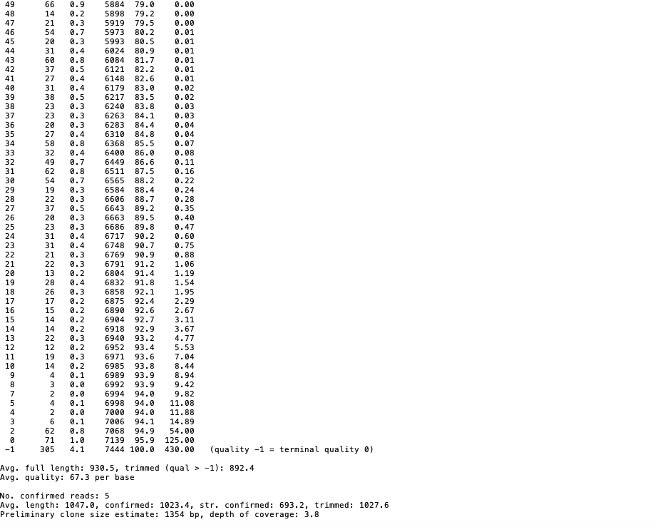
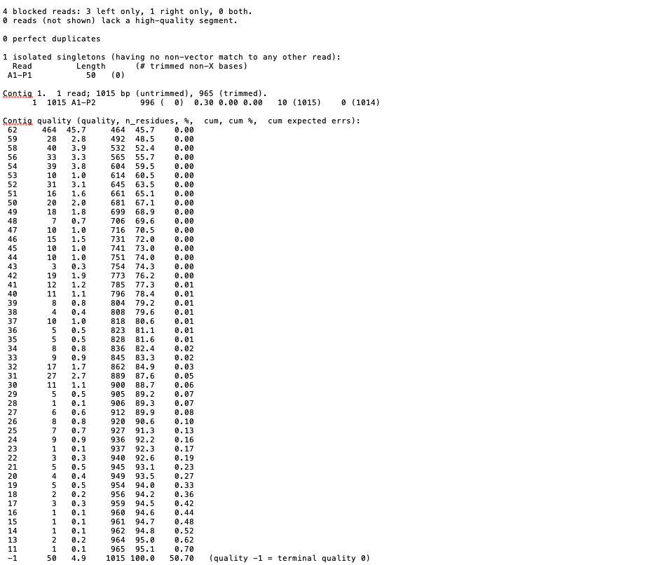
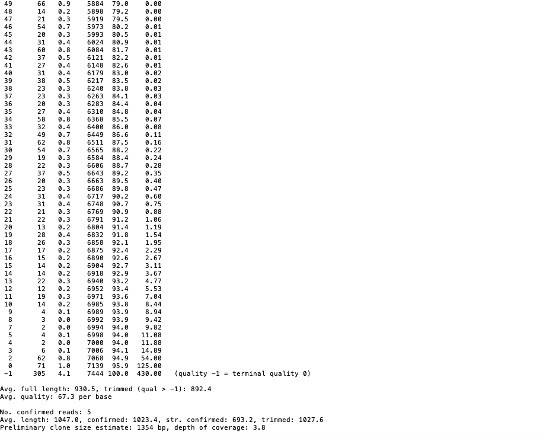
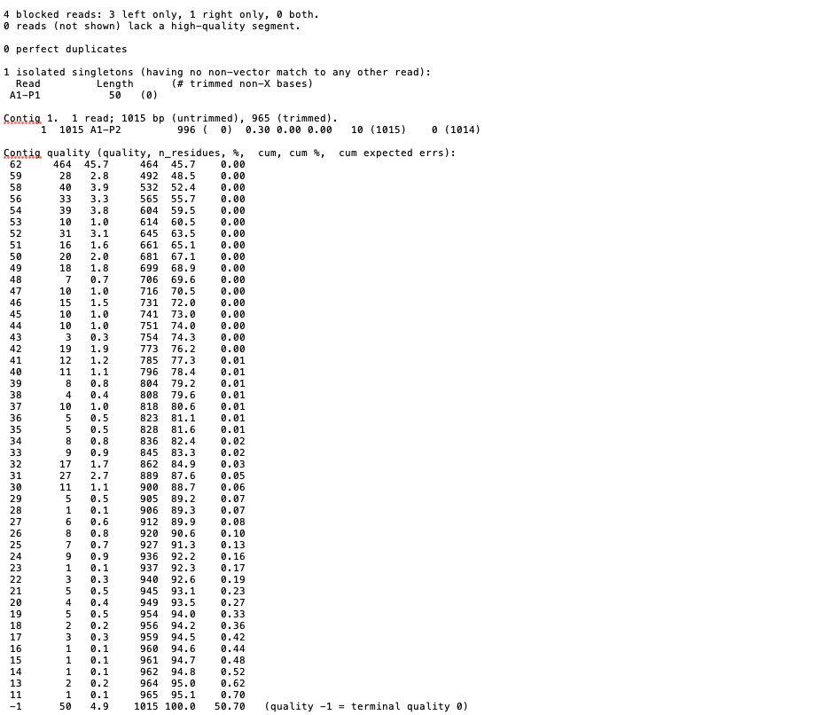

.ab1 files are trace files, seq files are the sequence of nucleotides from the trace files
Display and visually clean the trace files looking for N on both ends, trim and do blast search
tool: https://www.youtube.com/watch?v=Xqs6bcYSv34a1-p1.ab1 too small
a1-p2.ab1
1) open a1-p2.ab1
2) find the first N, click to select
once the first N is selected, select mask upstream and the sequence to the left should grey out. Click the >>N arrow to select the next N
this leads to the next N. Select mask downstream and verify the part of the sequence after the N is greyed out.

Copy the sequence and paste into blast. https://blast.ncbi.nlm.nih.gov/Blast.cgi
Nucleotide search >> rRNA/ITS databases.
CCA incorporates phred into the eval version. Phred is supposed to outperform the ABI sw by using "simple fourier" analysis. not clear
When reading you get blank, highest quality, light green, dark green lowest quality

assemble ax-px into a contig
p>
can build a tree on ax-px.ab1

 


